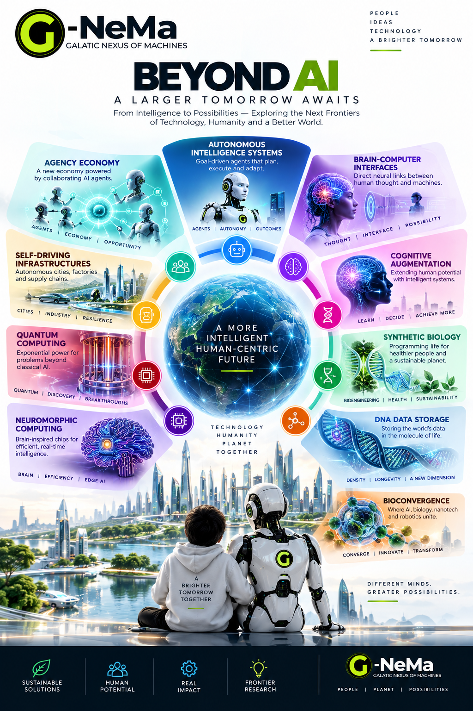
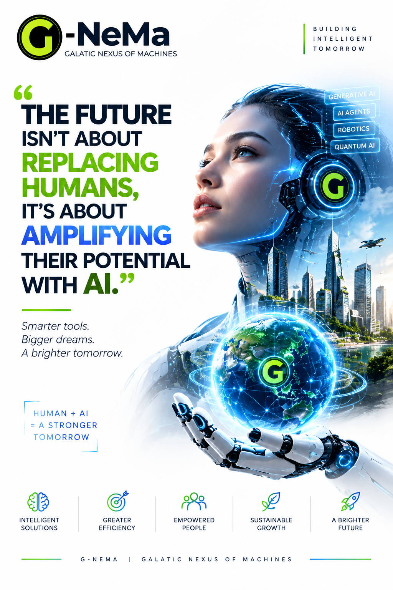
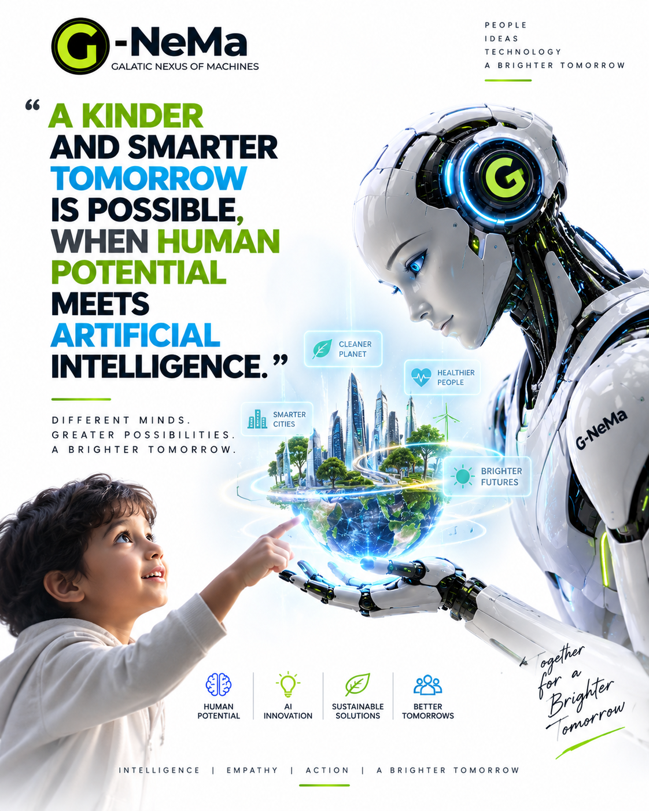
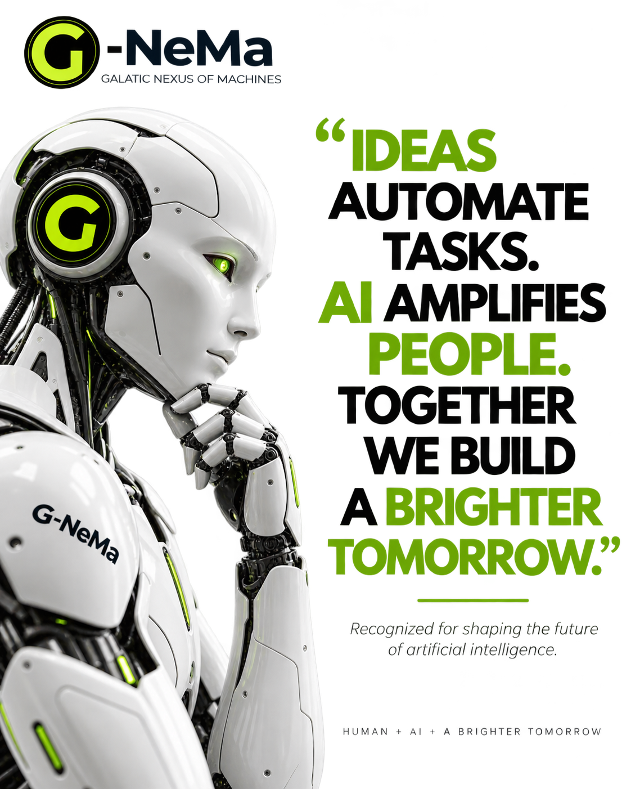
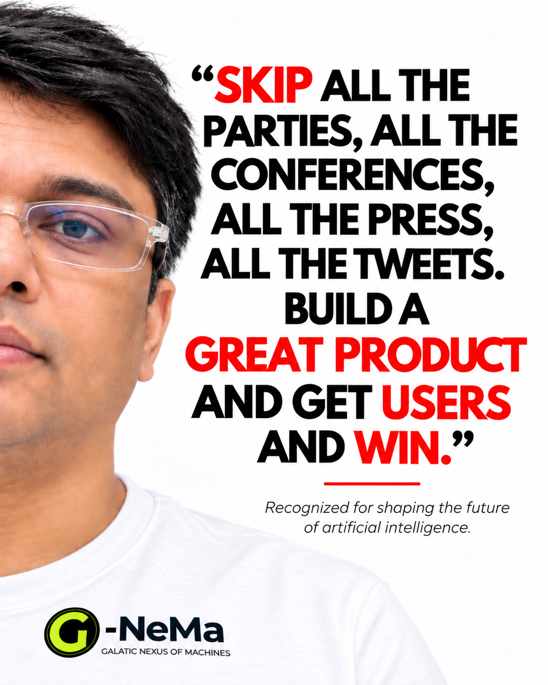
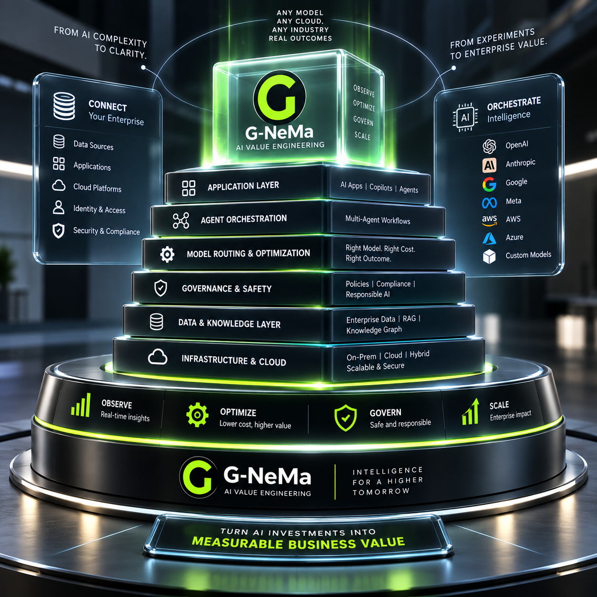
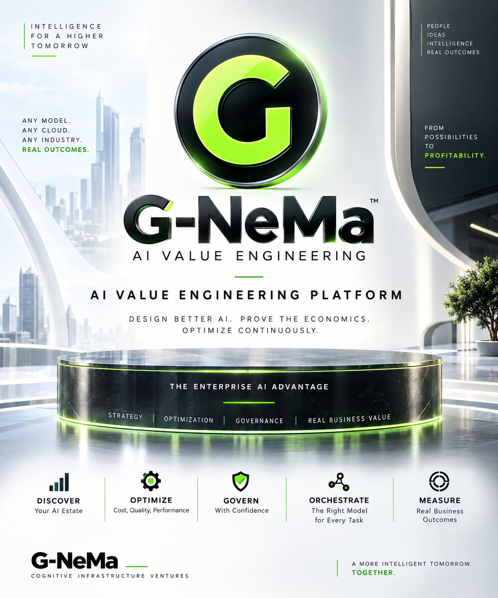
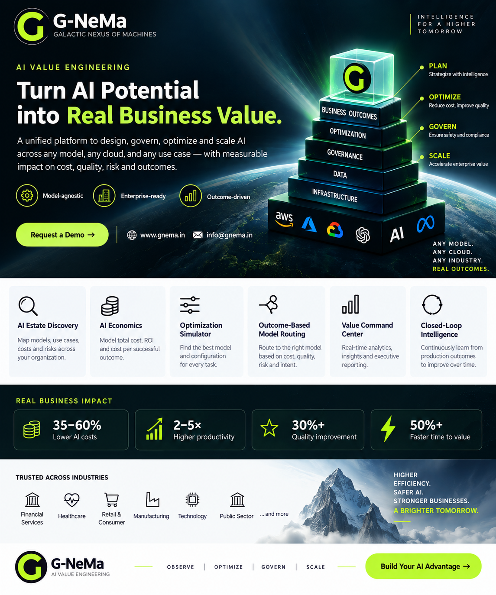

Galactic Nexus of Machines.
G-NeMa builds intelligent products and systems across enterprise AI, autonomous systems, space, robotics, cybersecurity and defense — with an engineering-led focus on useful, observable and governable machine intelligence.
Engineering before hype.
We focus on systems that can be understood, observed, governed and measured. Intelligence is valuable when it produces dependable outcomes.
Galactic Nexus of Machines.
G-NeMa is an AI technology and intelligent-systems venture. We build enterprise AI products, autonomous agents, data intelligence, intelligent automation and frontier systems across areas including database intelligence, robotics and space systems.
Engineering AI for measurable value.
Our AI Value Engineering approach connects AI architecture, economics, optimization, governance, orchestration and business outcomes into one enterprise decision layer.
One company. Multiple intelligence frontiers.
Our portfolio connects enterprise software with autonomous and mission-oriented systems.
Enterprise Intelligence
AI infrastructure, multi-agent operations, database intelligence and decision systems for real organizations.
Explore Enterprise Products →Autonomous Systems
AI architectures for robotics, mission planning, resilient autonomy and intelligent operations.
Explore Solutions →Frontier Intelligence
Research and product directions spanning space, robotics, cybersecurity and defense.
Explore Research →G-NeMa Insights
Topic-focused perspectives connecting our engineering work to broader technology problems.
Read G-NeMa Insights →Intelligence without borders.
Ideas, people and intelligent systems.
A visual look at the G-NeMa vision, our frontier technology themes and the AI products we are building.





AI Value Engineering.
Visuals from the G-NeMa AI Value Engineering platform: architecture, optimization, governance and measurable business value.


